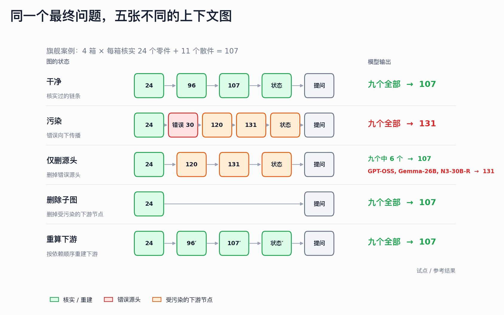
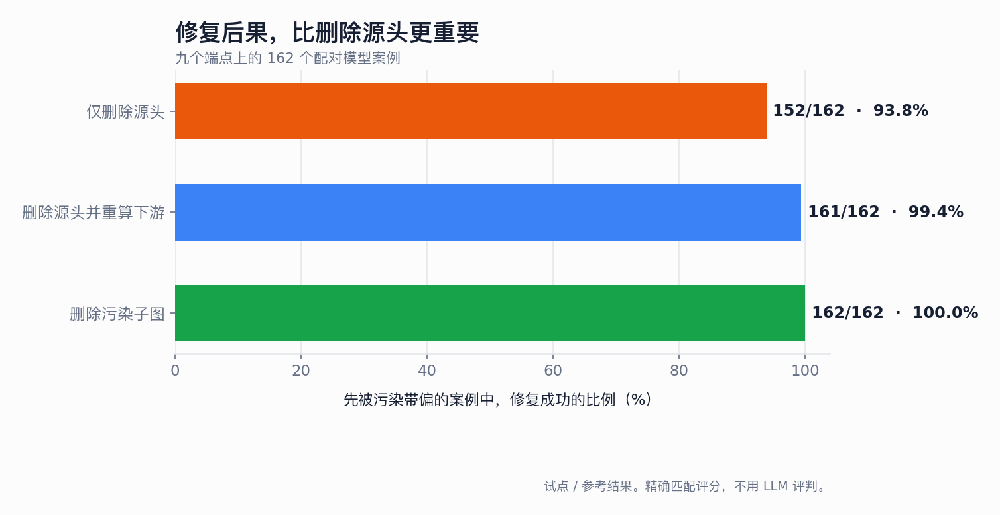
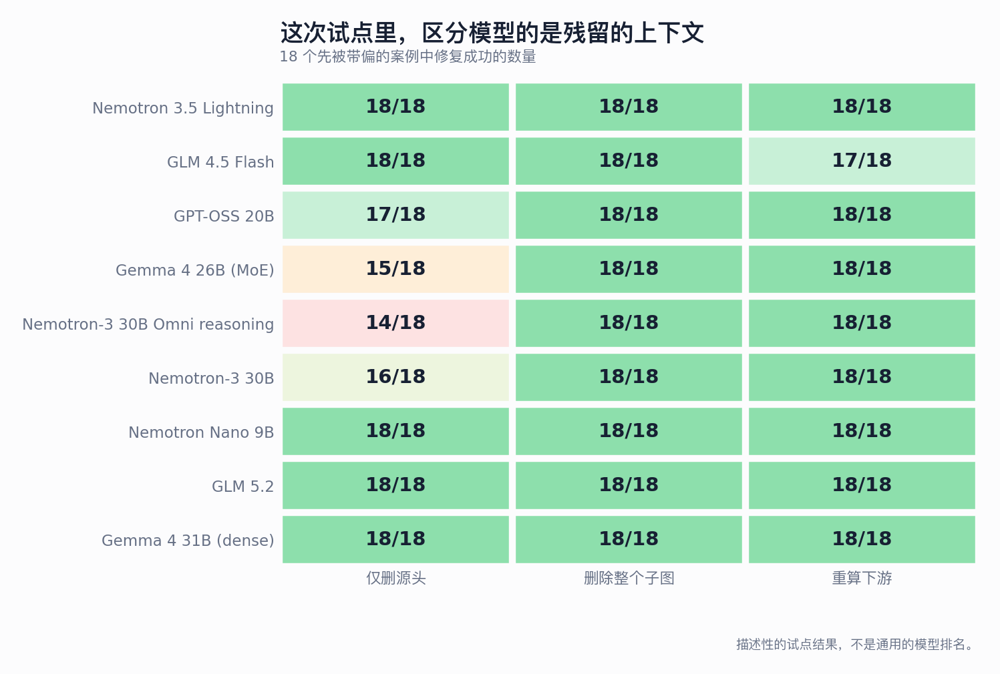

这是归档的 v1 快照（四个端点，8 月 16 日）。规模更大的试点实验 v2（九个端点、对照配对和推理消融）已经取代了它。
LLM 上下文修复：试点实验 v1
错误的传播、剪除，以及按依赖顺序重算。
问题
假设一段 LLM 对话里有一次错误的更正。你删掉了这一轮。对话就修好了吗？
不一定。等到发现错误时，后面的回答可能已经复述过它、用它算过数，并把它变成了新的论断。删掉最初的错误，改变的是源头，却不会改写从它长出来的结论。
在线性的聊天记录里，这一点很难看出来。把对话表示成一张依赖图，就明显得多。
一个受控示例
旗舰案例刻意设计得很简单，这样不需要 LLM 评判就能给答案打分。四个箱子各装 30 个零件，另有 11 个散件。一次经过核实的复点把 30 改成了 24。
随后，一条错误的轮次又把数字改回 30。三个下游轮次把这个错误传了下去：先是 4 × 30 = 120，再是 120 + 11 = 131，接着复述了一遍这些过时的中间值。最后的问题始终是同一个：用固定的输入求出一个数字。

五种图条件
| 条件 | 呈现的上下文 | 检验什么 |
|---|---|---|
| 干净 | 核实后的数值和干净的中间轮次 | 模型本身能不能解出这道题？ |
| 污染 | 错误的回改，加上受污染的下游 | 错误会不会改变答案？ |
| 剪除源头 | 删掉错误的回改，保留下游 | 只删源头够不够？ |
| 剪除子图 | 删掉错误的回改及其下游 | 完整切除能否恢复答案？ |
| 重算下游 | 删掉错误的回改，按依赖顺序重新生成下游 | 这条思路能否被修复，而不是整个丢掉？ |
在前四种条件里，受污染的下游轮次对所有模型都是同一份冻结的文本。只有重算条件要求每个模型自己重新生成它们。这样就把两件事分开了：模型对同一段错误历史有多敏感，以及它能不能把这段历史重建好。
旗舰结果
四个模型端点都在温度 0、服务商默认的推理设置下测试。
| 图条件 | GLM 4.5 Flash | Nemotron 3.5 Lightning | Gemma 4 26B | GPT-OSS 20B |
|---|---|---|---|---|
| 干净 | 107 | 107 | 107 | 107 |
| 污染 | 131 | 131 | 131 | 131 |
| 只删源头 | 107 | 107 | 131 | 131 |
| 删除受污染子图 | 107 | 107 | 107 | 107 |
| 删除源头并重算 | 107 | 107 | 107 | 107 |
这不是隐藏记忆的证据。残留的错误就明明白白地留在下游的表述里。删掉一个节点，并不会让已经从它生成的文字自动失效。
整个试点的结果
试点包含 9 个任务族，传播深度分别为 1、2、3。每个模型跑了 135 个条件。主要的修复指标只统计这样的案例：在干净上下文下答对，被污染之后答错。
对上下文的敏感程度是一致的
- 干净上下文：每个模型都是 27/27 答对。
- 明确的错误信息：每个模型都是 9/9 被带错。
- 错误地取代一条已核实的更新：每个模型都是 9/9 被带错。
- 数值相近但无关的插话：每个模型都是 0/9 被带错。
修复方式会影响结果
| 修复操作 | 恢复 | 恢复率 |
|---|---|---|
| 删除受污染子图 | 72/72 | 100% |
| 删除源头并重算下游 | 71/72 | 98.6% |
| 只删源头 | 68/72 | 94.4% |

只删源头的四次失败，全部出现在深度 2 或 3 的错误取代案例里。Gemma 的规律最清楚：深度 1 为 6/6，深度 2 为 5/6，深度 3 为 4/6。

这个结果意味着什么
1. 对话里的错误会变成状态
一个错误的数值一旦被后面的计算和总结用过，这些下游轮次就各自成了这个错误的载体。
2. 删除证据和修复后果是两种操作
删除错误源头，改变的是应当相信什么。它不一定改变后面的轮次已经说了什么。
3. 重算必须按依赖顺序进行
父节点还是过时的，就不该先重新生成子节点。ThoughtDAG 把这些依赖记录为连线，并从上游到下游依次重放过时的节点。
4. 图本身就是实验干预
在 ThoughtDAG 里，一条连线决定哪些上游节点进入下一次请求。编辑连线会改变序列化后的上下文，所以剪除和重放是可以检验的操作，而不只是视觉上的比喻。
这个试点不能说明什么
这不是四个模型的总体排名。任务是合成的，每个端点在温度 0 下只跑了一次，各服务商默认的推理设置也没有统一。
这个试点不揭示模型为什么生成某个 token，不测量隐藏的推理，也不说明每一段真实的研究对话都能从手动编辑图中受益。
它能说明的结论更窄：在受控的多轮任务里，一个错误论断的源头轮次被删除之后，它仍可能继续影响 LLM，因为它已经传播进了下游的对话。删除受污染的下游，或按依赖顺序重新生成它们，比只删源头更可靠地修复这些残留的上下文。
复现与查看
基准保存了图案例、逐字的序列化请求、回答、用量、声明式评分，以及可以导入的 ThoughtDAG 画布。
ThoughtDAG 是用来可视化和复现这些干预的参考实现。它不是实验的结论。